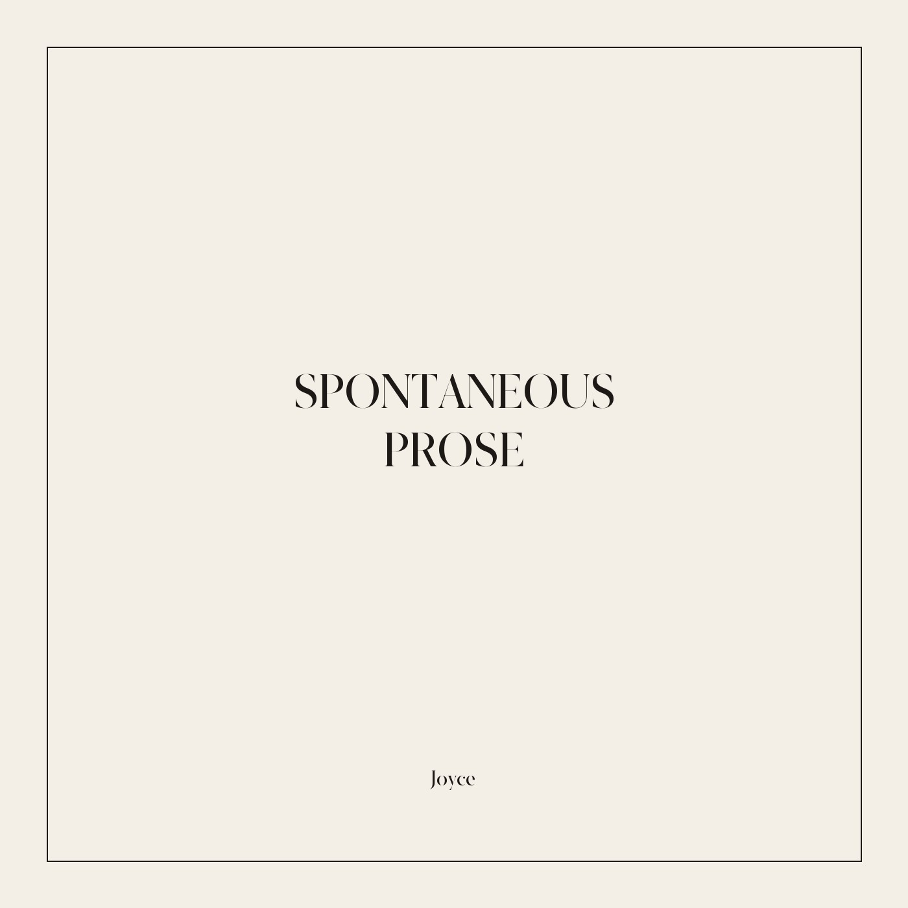

Spontaneous Prose
An all-English podcast by Joyce. Spoken drafts, not recitations — English you can hear at full speed.
RSS: feed.xml
A Sense of Ease
A Toastmasters prepared speech, and the first episode of Spontaneous Prose: why a sense of ease is so hard to feel when the urgent list never ends.